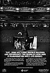

Exit... Stage Left
Released October 1981
Mercury/Polygram
Produced by Rush and Terry Brown
Time/Songs:
(5:12) The Spirit of Radio
(6:48) Red Barchetta
(7:44) YYZ
(3:47) A Passage To Bangkok
(3:09) Closer To The Heart
(2:34) Beneath, Between and Behind
(8:47) Jacob's Ladder
(1:37) Broon's Bane
(5:50) The Trees
(12:10) Xanadu
(5:33) Freewill
(5:01) Tom Sawyer
(9:38) La Villa Strangiato (An Exercise in
Self-Indulgence)

"Exit...Stage Left," a new digitally-mastered, live-performance, two-record set from Rush. It transforms you into a live audience.